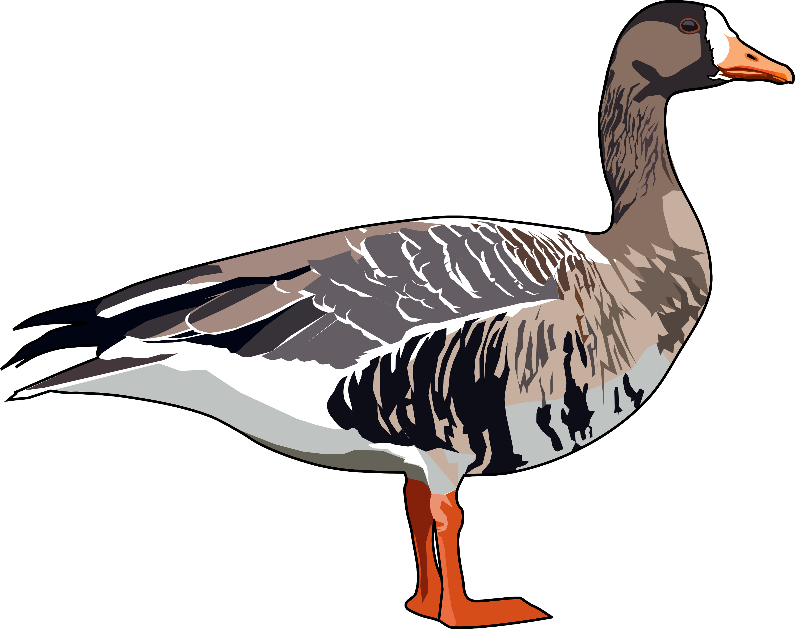

Projects
My Broad Interests
Ornithology ü¶¢
Animal Movement üêæ
Statistical modelling üìä
Released Gambird Dispseral in the UK
Postdoctoral Research: University of Exeter
I am currently a postdoctoral researcher in the Centre for Research in Animal Behaviour at the University of Exeter. I am investigating the movement and wider dispersal of Common Pheasants Phasianus colchicus from both a game management perspective and to limit dispersal into protected areas. I am using GPS tracking data and radio tracking data to build individual-based models that predict the movement of released pheasant pheasants from any point in the UK.
Analysing Animal Movement data
ExMove: Univeristy of Exeter
Alongside other postdoctoral researchers created a toolkit for processing biologging data from tag downloads to online archiving in online data base. The code is open-access and serves as a both a self-teaching guide for both new and more advanced users. The code is available from a GitHub repository here. I also built a shiny app that allows users to explore their data using a user friendly GUI, this can be accessed only here.

Collision Risk Modelling of Seabirds with Offshore Wind Turbines
Contracted Work: JNCC
I lead a review of the avoidance rate parameter used in the collision risk modelling of seabirds which is a key part of the consenting process for offshore wind developments. I reviewed and assessed available literature that contained data that could be used to derive estimates of the avoidance rate parameter. Avoidance rates were calculated using this data with two variants of the Band (2012) collision risk model and their stochastic implementations. Estimates were compared to previous industry standards in (Cook 2021) and we found increases in the avoidance rates for the following species groupings: all gulls, large gulls, and all gulls & terns. A link to the report and supporting materials can be found here. This work should be cited as: Ozsanlav-Harris, L., Inger, R. & Sherley, R. 2023. Review of data used to calculate avoidance rates for collision risk modelling of seabirds. JNCC Report 732, JNCC, Peterborough, ISSN 0963-8091.
Diagnosing the decline of Greenland-White-fronted Geese
PhD Research: Univeristy of Exeter
I carried out a PhD at the University of Exeter to understand the decline of a migratory waterfowl species, the Greenland White-fronted Goose Anser albifrons flavirostris. I investigated different factors that could be contributing to population decline. This included lead poisoning and shooting disturbance on Islay, Scotland from shooting of the Barnacle Goose population on the island. I also investigated how changes to the climate in the Western Greenland breeding grounds could be causing low breeding success across the population. To fully investigate this we deployed biologging devices across the wintering range and remotely examined breeding using remote sensing data and biologging data to remotely classify breeding events. You can find out more about this work from the Wildfowl and Wetlands Trust here.

Links to my research üîó
Click here to view my ResearchGate profile
Click here for my Google Scholar profile